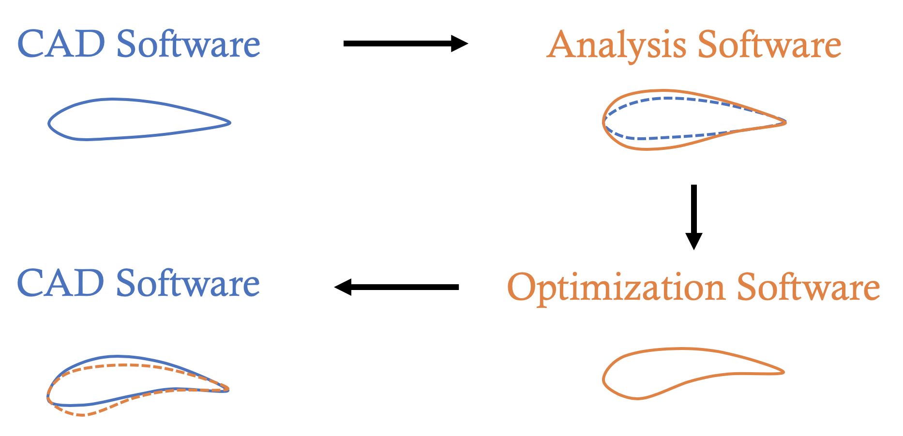
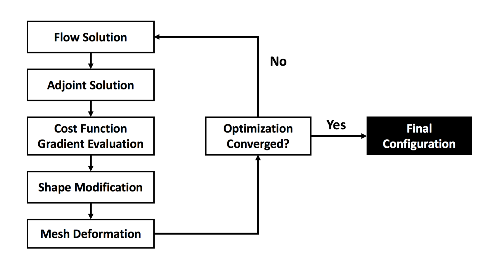
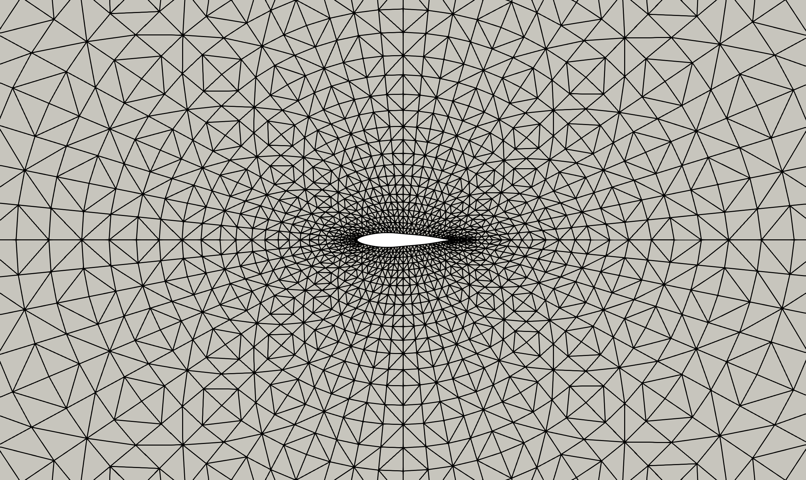
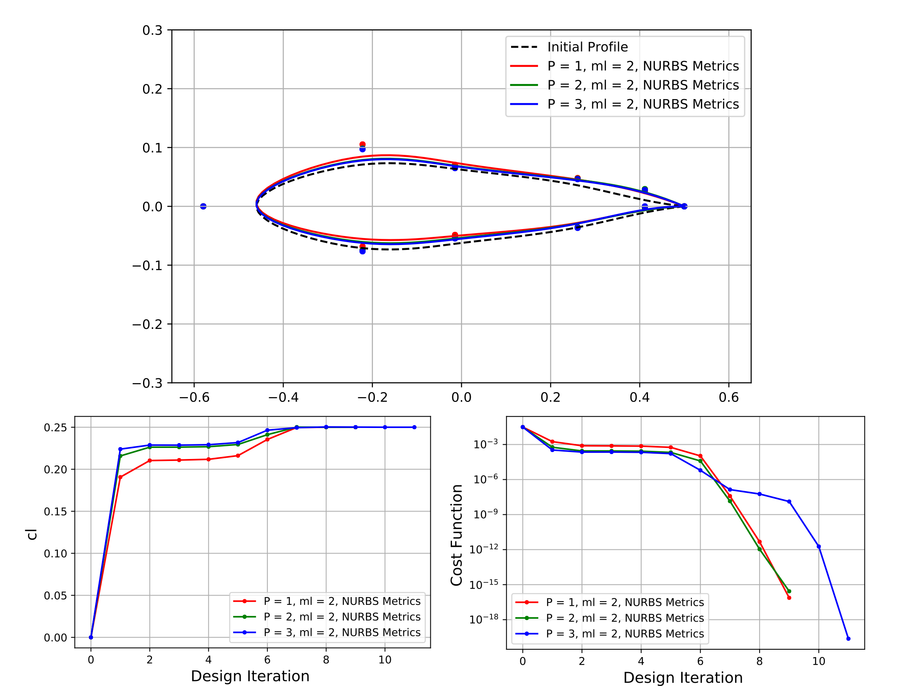

Adjoint Based Aerodynamic Shape Optimization for High Order Methods¶
Collaborators: Philip Zwanenburg and Prof. Siva Nadarajah
Motivation¶

A significant bottleneck in the traditional aerodynamic shape optimization design process lies in interfacing with Computer-Aided Design (CAD) software. CAD software typically represents objects and shapes using NURBS (Non-Uniform Rational B-Splines) basis functions. In contrast, analysis software, such as computational fluid dynamics (CFD) tools, and optimization programs (often integrated within the same CFD software), traditionally use polynomial basis functions to represent shapes and boundaries. This discrepancy leads to key challenges and a loss of accuracy.
Specifically, when transitioning from CAD software to CFD/optimization software, the NURBS geometric model must be approximated using polynomials, introducing inaccuracies in the representation of the original shape. After the model is analyzed and optimized, the object must be transitioned back to the CAD software for integration into the broader design, manufacturing drawings, or other processes. Due to the same discrepancies in shape parameterization, this step also requires approximations, further compounding the inaccuracy of the shape representation. (The above schematic visually illustrates how these issues arise at each step.)
Addressing these inaccuracies in shape parameterization is a critical and relevant challenge. Solving this issue is essential to bridging the gap between CAD and analysis/optimization software, thereby improving the efficiency and accuracy of the typical engineering design cycle.
Our Research¶
This project aimed to address the issue of discrepancies in shape parameterization by exploring the NURBS-Enhanced Discontinuous Galerkin (DG) Method. At a high level, this is a numerical method used in CFD applications for simulating fluid flows. It integrates two key approaches: (1) the NURBS-Enhanced Approach and (2) the Discontinuous Galerkin (DG) method:
-
The Discontinuous Galerkin Method belongs to the class of high-order methods for numerically solving partial differential equations (PDEs). Compared to standard finite volume methods, DG methods offer the advantage of solving PDEs with much higher accuracy, particularly for complex problems.
-
The NURBS-Enhanced Approach augments the standard DG method by enabling the exact representation of shapes defined by NURBS basis functions (commonly used in CAD software) within the DG solver. This enhancement eliminates shape inaccuracy errors when transitioning from CAD to the CFD solver, effectively bridging the gap between these systems.
Additionally, as the project focused on optimizing aerodynamic efficiency (e.g., minimizing drag or maximizing lift), it incorporated adjoint-based optimization into the NURBS-Enhanced DG solver. The adjoint method provides an efficient way to compute the gradient and minimize the cost function (e.g., drag) with respect to the parameters defining the shape. These gradients enable the use of any nonlinear, gradient-based optimization algorithm (e.g., Sequential Quadratic Programming) to optimize the resulting shape (see Fig. 2).

Our ultimate research goal was to demonstrate adjoint based aerodynamic shape optimization for the NURBS-Enhanced Discontinuous Galerkin (DG) method. Although our results were preliminary, they show promise for one approach to tackle the challenges with shape parametrization when transitioning between CAD and CFD software.
Sample Results - Symmetric Airfoil Optimization¶

We show here sample results from our developed method for the problem of optimizing a symmetric airfoil in 2D. We consider in particular the problem of optimizing the airfoil to attain a target lift coefficient of 0.25 while constraining the pitching moment to have a value of -0.1255.

The optimized airfoil as well as the progression in the cost function and lift coefficient as a function of design iteration are shown in the above figure. We see that the trailing edge is slightly modified to give the airfoil the desired target lift while satisfying the pitching moment constraint. In these figures, there are several values of "P" reported as well. This corresponds to the accuracy of the NURBS-Enhanced DG solver used to simulate the flow. A higher value of "P" essentially results in a higher accuracy solver being used.
Further Details¶
The explanation above contains a high level description of our methodology. For further details, please check:
The code for this method has been written in C and builds upon a high order solver written by the McGill Computational Aerodynamics Group: